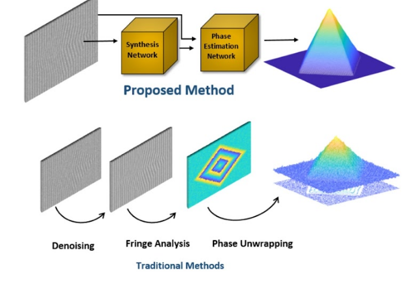

Fringe projection techniques are widely used for precise three-dimensional depth profiling of objects. Existing signal processing-based fringe projection techniques measure the phase deformation of the projected fringe patterns with a sequence of operations, such as fringe denoising, fringe analysis for wrapped phase extraction, followed by phase unwrapping. However, the error induced in any of the stages leads to erroneous depth estimation. Furthermore, any aliasing in frequency domain fringe analysis and ill-posed nature of phase unwrapping limit the overall accuracy of the Fringe Projection Profilometry (FPP). To this end, unlike the traditional approaches, we propose a paradigm shift by introducing a novel end-to-end deep learning-based framework for FPP that does not need any frequency domain filtering and phase unwrapping. The proposed framework directly reconstructs the object’s depth profile from the deformed fringe itself through a multi-resolution similarity assessment convolutional neural network. We compare the performance of the proposed framework with two widely used conventional approaches. The evaluations are performed for various challenging and important scenarios such as low fringe-frequency, depth profiles with high dynamic range and noisy fringes. The results demonstrate that the proposed framework achieves promising results in all these scenarios.